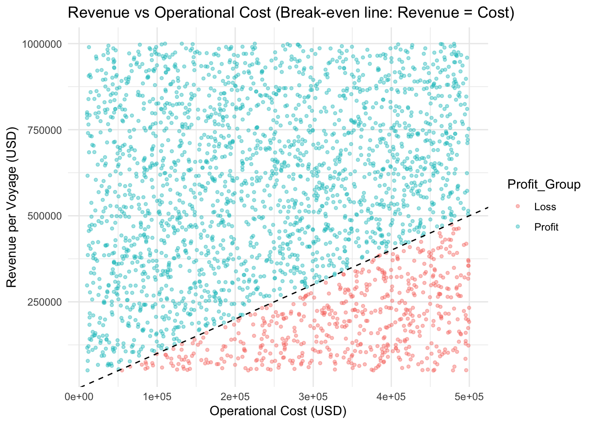
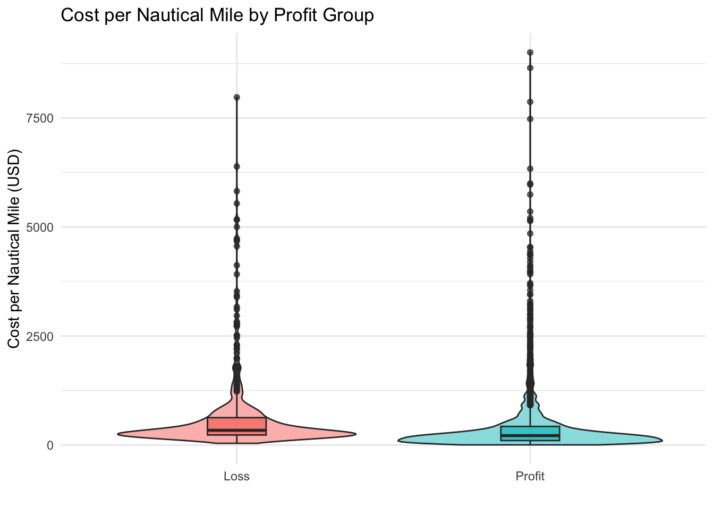
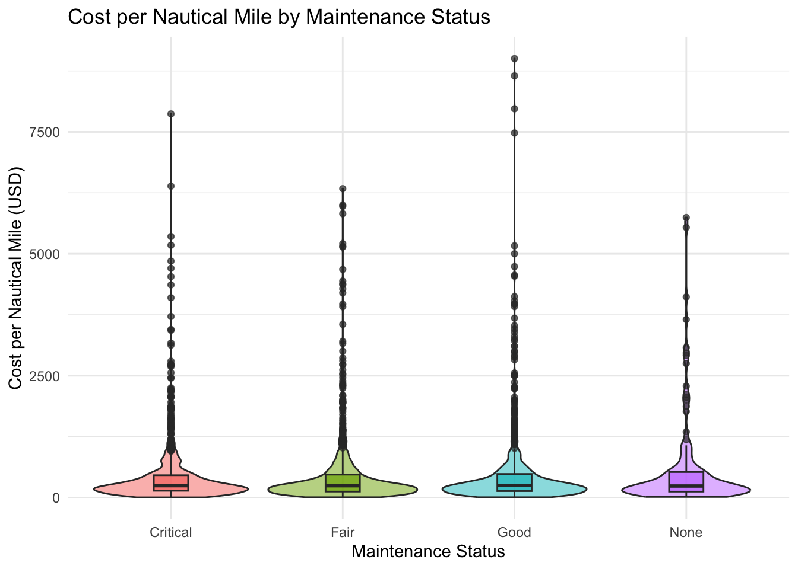
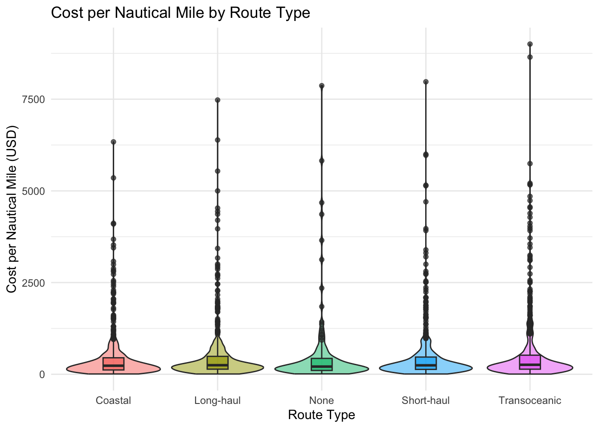
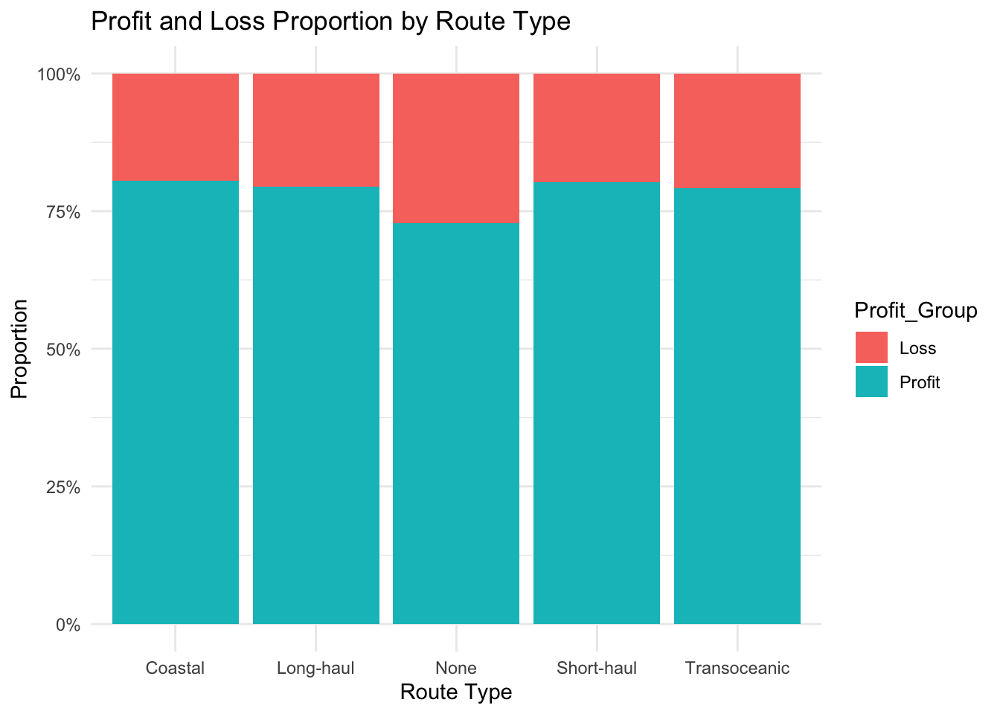
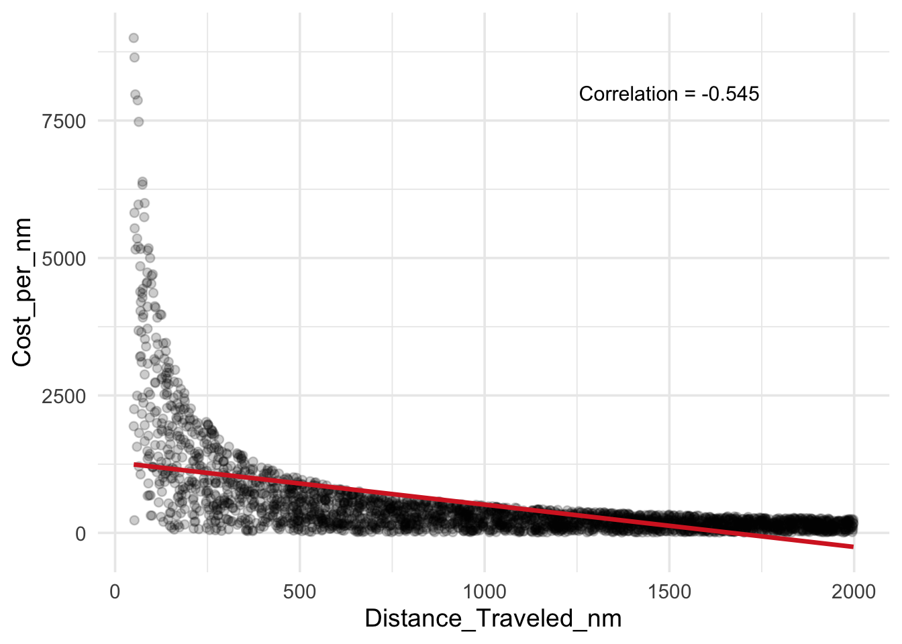

library(tidyverse)
library(skimr)
library(corrplot)
library(ggridges)
library(GGally)
theme_set(
theme_minimal(base_size = 13) +
theme(
plot.title = element_text(face = "bold"),
axis.title = element_text(face = "bold"),
panel.grid.minor = element_blank()
)
)
ship <- read_csv("data/Ship_Performance_Dataset.csv")Take-on-Exercise
1.Introduction
This dataset contains 2,736 ship voyage records collected between June 2023 and June 2024. Each record represents an individual voyage and includes operational, technical, and financial variables such as ship type, route category, engine characteristics, cargo weight, operational cost, revenue, distance traveled, and efficiency indicators. The dataset provides a structured view of voyage-level performance, allowing investigation of cost structure, revenue generation, and operational efficiency. The presence of both financial and operational variables enables exploration of structural mechanisms behind profitability risk.
Research Question: What factors drive profitability risk in ship voyages, and where is the primary operational bottleneck?
2. Data Preparation
colSums(is.na(ship)) Date Ship_Type Route_Type
0 0 0
Engine_Type Maintenance_Status Speed_Over_Ground_knots
0 0 0
Engine_Power_kW Distance_Traveled_nm Draft_meters
0 0 0
Weather_Condition Cargo_Weight_tons Operational_Cost_USD
0 0 0
Revenue_per_Voyage_USD Turnaround_Time_hours Efficiency_nm_per_kWh
0 0 0
Seasonal_Impact_Score Weekly_Voyage_Count Average_Load_Percentage
0 0 0 skim(ship)| Name | ship |
| Number of rows | 2736 |
| Number of columns | 18 |
| _______________________ | |
| Column type frequency: | |
| character | 5 |
| Date | 1 |
| numeric | 12 |
| ________________________ | |
| Group variables | None |
Variable type: character
| skim_variable | n_missing | complete_rate | min | max | empty | n_unique | whitespace |
|---|---|---|---|---|---|---|---|
| Ship_Type | 0 | 1 | 4 | 14 | 0 | 5 | 0 |
| Route_Type | 0 | 1 | 4 | 12 | 0 | 5 | 0 |
| Engine_Type | 0 | 1 | 4 | 20 | 0 | 4 | 0 |
| Maintenance_Status | 0 | 1 | 4 | 8 | 0 | 4 | 0 |
| Weather_Condition | 0 | 1 | 4 | 8 | 0 | 4 | 0 |
Variable type: Date
| skim_variable | n_missing | complete_rate | min | max | median | n_unique |
|---|---|---|---|---|---|---|
| Date | 0 | 1 | 2023-06-04 | 2024-06-30 | 2023-12-17 | 57 |
Variable type: numeric
| skim_variable | n_missing | complete_rate | mean | sd | p0 | p25 | p50 | p75 | p100 | hist |
|---|---|---|---|---|---|---|---|---|---|---|
| Speed_Over_Ground_knots | 0 | 1 | 17.60 | 4.31 | 10.01 | 13.93 | 17.71 | 21.28 | 25.00 | ▇▇▇▇▇ |
| Engine_Power_kW | 0 | 1 | 1757.61 | 717.00 | 501.03 | 1148.10 | 1757.49 | 2382.59 | 2998.73 | ▇▇▇▇▇ |
| Distance_Traveled_nm | 0 | 1 | 1036.41 | 568.63 | 50.43 | 548.51 | 1037.82 | 1540.93 | 1998.34 | ▇▇▇▇▇ |
| Draft_meters | 0 | 1 | 9.93 | 2.88 | 5.00 | 7.44 | 9.92 | 12.41 | 14.99 | ▇▇▇▇▇ |
| Cargo_Weight_tons | 0 | 1 | 1032.57 | 558.70 | 50.23 | 553.98 | 1043.21 | 1527.72 | 1999.13 | ▇▇▇▇▇ |
| Operational_Cost_USD | 0 | 1 | 255143.34 | 140890.48 | 10092.31 | 131293.38 | 257157.65 | 381796.93 | 499734.87 | ▇▇▇▇▇ |
| Revenue_per_Voyage_USD | 0 | 1 | 521362.06 | 271211.63 | 50351.81 | 290346.39 | 520176.93 | 750072.79 | 999916.70 | ▇▇▇▇▇ |
| Turnaround_Time_hours | 0 | 1 | 41.75 | 17.63 | 12.02 | 26.17 | 41.59 | 57.36 | 71.97 | ▇▇▇▇▇ |
| Efficiency_nm_per_kWh | 0 | 1 | 0.80 | 0.40 | 0.10 | 0.46 | 0.79 | 1.15 | 1.50 | ▇▇▇▇▇ |
| Seasonal_Impact_Score | 0 | 1 | 1.00 | 0.29 | 0.50 | 0.76 | 1.01 | 1.25 | 1.50 | ▇▇▇▇▇ |
| Weekly_Voyage_Count | 0 | 1 | 4.91 | 2.60 | 1.00 | 3.00 | 5.00 | 7.00 | 9.00 | ▇▇▃▇▇ |
| Average_Load_Percentage | 0 | 1 | 75.22 | 14.51 | 50.01 | 62.70 | 75.50 | 87.72 | 100.00 | ▇▇▇▇▇ |
Revenue − Cost = Profit : Measure the profitability of the voyage
Data cleaning (missing values → “Unknown”) - Created variables: - Profit - Profit_Group - Cost_per_nm - Profit_Margin
cat_cols <- c("Ship_Type","Route_Type","Engine_Type","Maintenance_Status","Weather_Condition")
ship <- ship %>%
mutate(across(all_of(cat_cols), ~replace_na(.x, "Unknown"))) %>%
mutate(across(all_of(cat_cols), as.factor))
ship <- ship %>%
mutate(
Profit = Revenue_per_Voyage_USD - Operational_Cost_USD,
Profit_Group = ifelse(Profit > 0, "Profit", "Loss"),
Profit_Margin = Profit / Revenue_per_Voyage_USD,
Cost_per_nm = Operational_Cost_USD / Distance_Traveled_nm,
Rev_per_ton = Revenue_per_Voyage_USD / Cargo_Weight_tons
)3.Analytical Findings
Do the losses fall mainly on “costs too high” or “revenues too low”?
Figure 1 – Revenue vs Cost Structure
ggplot(ship, aes(x = Operational_Cost_USD, y = Revenue_per_Voyage_USD, color = Profit_Group)) +
geom_point(alpha = 0.4, size = 1) +
geom_abline(slope = 1, intercept = 0, linetype = "dashed") +
labs(
title = "Revenue vs Operational Cost (Break-even line: Revenue = Cost)",
x = "Operational Cost (USD)",
y = "Revenue per Voyage (USD)"
) +
theme_minimal()
ship %>%
count(Profit_Group) %>%
mutate(rate = n/sum(n))# A tibble: 2 × 3
Profit_Group n rate
<chr> <int> <dbl>
1 Loss 562 0.205
2 Profit 2174 0.795The scatterplot shows a clear separation around the break-even line (Revenue = Cost). Approximately 20.5% of voyages fall below the line, indicating losses. Loss-making voyages are more concentrated in the higher-cost region, particularly when operational costs exceed 300,000 USD. In contrast, profitable voyages are widely distributed across cost levels, suggesting that high cost alone does not necessarily cause losses if revenue scales proportionally. This indicates that profitability is not purely revenue-driven; rather, cost control efficiency plays a significant role. Therefore, we need to find out where are losses mainly come from from 4 aspect : Maintenance issues;specific routes; cost per unit distance is too high; too low operational efficiency?
Figure 2 – Cost per Nautical Mile by Profit Group
ggplot(ship, aes(x = Profit_Group, y = Cost_per_nm, fill = Profit_Group)) +
geom_violin(alpha = 0.5) +
geom_boxplot(width = 0.2, alpha = 0.7) +
labs(
title = "Cost per Nautical Mile by Profit Group",
x = "",
y = "Cost per Nautical Mile (USD)"
) +
theme_minimal() +
theme(legend.position = "none")
ship %>%
group_by(Profit_Group) %>%
summarise(
median_cost_nm = median(Cost_per_nm),
mean_cost_nm = mean(Cost_per_nm)
)# A tibble: 2 × 3
Profit_Group median_cost_nm mean_cost_nm
<chr> <dbl> <dbl>
1 Loss 339. 640.
2 Profit 217. 446.A two-sample t-test confirms that the difference in unit cost between profit and loss voyages is statistically significant (p < 0.001).
t_test <- t.test(Cost_per_nm ~ Profit_Group, data = ship)
t_test$p.value[1] 3.883039e-06Observation 2 – Cost Efficiency as a Profit Driver
Loss voyages show significantly higher unit costs (median = 339 USD) compared to profitable voyages (median = 217 USD). This confirms that cost intensity per distance traveled strongly determines profitability.
Figure 3 – Maintenance vs Cost Efficiency
ggplot(ship, aes(x = Maintenance_Status, y = Cost_per_nm, fill = Maintenance_Status)) +
geom_violin(alpha = 0.5) +
geom_boxplot(width = 0.2, alpha = 0.7) +
labs(
title = "Cost per Nautical Mile by Maintenance Status",
x = "Maintenance Status",
y = "Cost per Nautical Mile (USD)"
) +
theme_minimal() +
theme(legend.position = "none")
ship %>%
group_by(Maintenance_Status) %>%
summarise(
median_cost_nm = median(Cost_per_nm),
mean_cost_nm = mean(Cost_per_nm)
) %>%
arrange(desc(median_cost_nm))# A tibble: 4 × 3
Maintenance_Status median_cost_nm mean_cost_nm
<fct> <dbl> <dbl>
1 Good 249. 505.
2 Critical 244. 455.
3 Fair 243. 482.
4 None 237. 585.
Observation 3 – Maintenance Condition and Cost Efficiency
Cost per nautical mile remains relatively similar across maintenance categories, with median values ranging between 237 and 249 USD. The small differences suggest that maintenance status does not significantly affect operational cost efficiency. Although the “None” category exhibits a slightly higher mean value, the median indicates no substantial structural variation. Therefore, maintenance condition is unlikely to be the primary profitability bottleneck.
Figure 5 – Route vs Cost Intensity
ggplot(ship, aes(x = Route_Type, y = Cost_per_nm, fill = Route_Type)) +
geom_violin(alpha = 0.5) +
geom_boxplot(width = 0.2, alpha = 0.7) +
labs(
title = "Cost per Nautical Mile by Route Type",
x = "Route Type",
y = "Cost per Nautical Mile (USD)"
) +
theme_minimal() +
theme(legend.position = "none")
ship %>%
group_by(Route_Type) %>%
summarise(
median_cost_nm = median(Cost_per_nm),
mean_cost_nm = mean(Cost_per_nm)
) %>%
arrange(desc(median_cost_nm))# A tibble: 5 × 3
Route_Type median_cost_nm mean_cost_nm
<fct> <dbl> <dbl>
1 Transoceanic 259. 572.
2 Long-haul 247. 472.
3 Short-haul 244. 469.
4 Coastal 233. 424.
5 None 210. 528.Observation 4 – Route Type and Cost Intensity
Transoceanic routes exhibit slightly higher unit costs, indicating structural cost variation across route categories.
Figure 6 – Route vs Loss Rate
ship %>%
group_by(Route_Type) %>%
summarise(
total = n(),
loss = sum(Profit_Group == "Loss"),
loss_rate = loss / total
) %>%
arrange(desc(loss_rate))# A tibble: 5 × 4
Route_Type total loss loss_rate
<fct> <int> <int> <dbl>
1 None 136 37 0.272
2 Transoceanic 638 133 0.208
3 Long-haul 686 141 0.206
4 Short-haul 626 124 0.198
5 Coastal 650 127 0.195ship %>%
group_by(Route_Type, Profit_Group) %>%
summarise(n = n(), .groups = "drop") %>%
group_by(Route_Type) %>%
mutate(prop = n/sum(n)) %>%
ggplot(aes(x = Route_Type, y = prop, fill = Profit_Group)) +
geom_col(position = "fill") +
scale_y_continuous(labels = scales::percent) +
labs(
title = "Profit and Loss Proportion by Route Type",
x = "Route Type",
y = "Proportion"
) +
theme_minimal()
Observation 5 – Route Type and Loss Risk
Loss proportions remain relatively consistent across most route types (approximately 19–21%), indicating that route category alone does not substantially increase profitability risk. The “None” category shows a higher loss rate, which may reflect data classification issues rather than operational structure. Overall, while route type influences cost levels, it does not significantly determine the probability of incurring losses.
Figure 7 – Distance vs Cost per Nautical Mile
ggplot(ship, aes(x = Distance_Traveled_nm, y = Cost_per_nm)) +
geom_point(alpha = 0.2) +
geom_smooth(method = "lm", se = FALSE, size = 1.2, color = "#D62828") +
annotate("text", x = 1500, y = 8000,
label = "Correlation = -0.545",
size = 4) +
theme_minimal(base_size = 14)
Observation 6 – Scale Effect of Distance on Cost Efficiency
A strong negative relationship is observed between distance traveled and cost per nautical mile (correlation = −0.545). Shorter voyages tend to exhibit significantly higher unit costs, while longer voyages benefit from reduced cost intensity per nautical mile. This pattern suggests the presence of scale effects, where fixed operational costs are distributed across longer distances, improving cost efficiency. Therefore, the profitability bottleneck does not stem from route category or maintenance condition alone, but from scale inefficiency in shorter voyages. This structural cost dynamic helps explain why certain voyages incur losses despite similar revenue levels.
4. Conclusion
This analysis reveals that approximately one-fifth of voyages incur financial losses. Profitability is strongly associated with cost intensity per nautical mile, while maintenance condition and route category alone do not significantly alter loss probability. A strong negative relationship between voyage distance and unit cost (correlation = −0.545) highlights the presence of scale effects. Short-distance voyages suffer from cost inefficiency due to limited spreading of operational costs across distance. Therefore, profitability risk is primarily driven by structural scale inefficiency rather than categorical operational factors. Strategic improvements in voyage planning and cost allocation may substantially enhance overall financial performance.